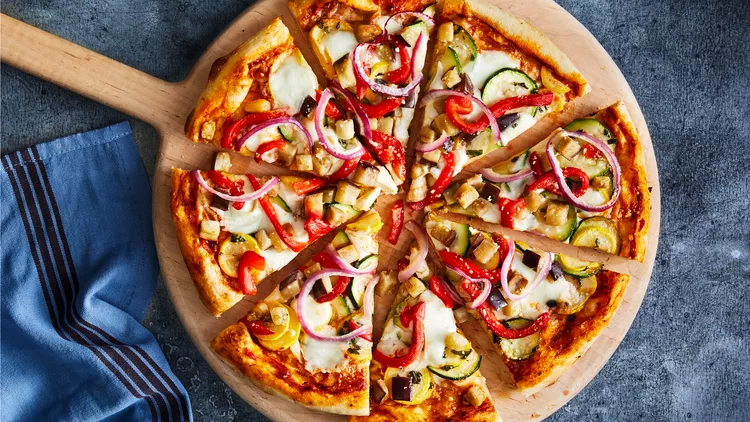

Indore, the bustling city in the heart of Madhya Pradesh, India, is renowned for its vibrant street food culture. From savoury snacks to sweet treats, the city offers a plethora of culinary delights that cater to every palate. Among the myriad of street specialities, two standout dishes that capture the essence of Indore's unique flavours are Egg Benjo and more. Join us as we embark on a gastronomic journey through the streets of Indore to explore these unique street foods that will leave you craving for more.
Here is my pizza picture
If you need more informetion then click here